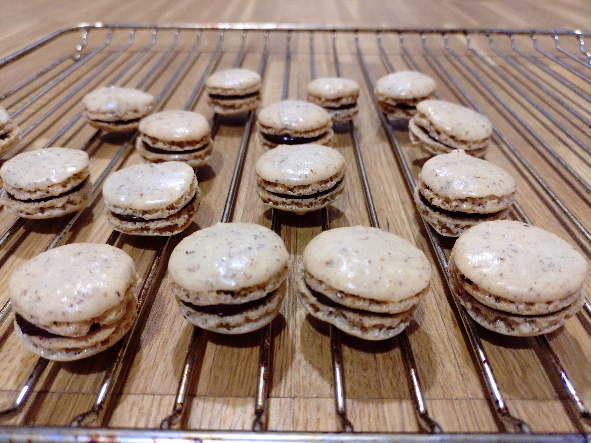

Wenn man nicht den Anspruch hat, einen Schönheitswettbewerb zu gewinnen, sind Macarons überraschend einfach und schnell herzustellen. Wenn die Eiweiß-Schalen zu lange im Ofen bleiben, bekommt man ebenfalls leckere Makronen anstatt Macarons!

Zutaten (Menge ×1)
Gib die gewünschte Menge an:
Macaron-Schalen
gemahlene Haselnüsse
Puderzucker
Kristallzucker
Eiklar (S Ei: ca. 30 - 35 g Eiklar, M Ei: ca. 35 - 40 g Eiklar)
Füllung Alternative 1: Dichtere Schokocreme
Schwarze Schokolade 70%
Schlagsahne
Füllung Alternative 2: Luftigere Schokocreme
Schwarze Schokolade 70%
Schlagsahne
Kaffee-Extrakt oder Instant-Kaffeepulver
Utensilien
Spritzbeutel o.ä
Ofeneinstellung
⏲ 140°C Ober-/Unterhitze, 15 Minuten
Macaron-Schalen
Gemahlene Haselnüsse und Puderzucker sieben, beiseite stellen.
Eiweiß schlagen. Wenn es anfängt, schaumig zu werden, den Kristallzucker dazugeben und weiter schlagen, bis ein Eiweißschaum entsteht, in dem Furchen sichtbar bleiben.
Das Haselnuss-Puderzucker-Pulver in 3 Portionen gleichmäßig unterheben, bis eine homogene, dickflüssige Masse entstanden ist.
Die Macaron-Masse in den Spritzbeutel geben und ca. 1.5 cm breite Kreise mit ca. 1 cm Abstand zueinander auf das Backblech geben. Die Kreise werden noch etwas zerlaufen.
Macarons ca. 20 - 30 Minuten antrocknen lassen. Nach der Ruhezeit sollte die Oberseite sich etwas trocken anfühlen. Ansonsten länger warten.
Macarons bei 140°C ca. 15 Minuten backen.
Herausnehmen und abkühlen lassen.
Füllung Alternative 1: Dichtere Schokocreme
Die Schokolade zunächst in kleinere Stücke brechen.
Im Topf die Schlagsahne aufkochen und den Topf dann ausschalten.
Die Schokoladenstücke sofort dazu geben und zu einer gleichmäßigen Masse rühren.
Bei Raumtemparatur abkühlen lassen, bis die Masse streichfähig ist.
Füllung Alternative 2: Luftigere Schokocreme
Schokolade, Sahne und Kaffeepulver zusammen schmelzen und verrühren.
Im Kühlschrank abkühlen lassen.
Wenn die Creme etwas fester geworden ist, mit der Hand ein wenig aufschlagen.
Fertigstellung
Macarons-Schalen mit der Creme bestreichen. Für einen schöneren Effekt den Spritzbeutel verwenden. Anschließend den Deckel aufsetzen.
Die Macarons mindestens 4 Stunden im Kühlschrank aufbewahren. Erst dann werden sie die richtige Konsistenz haben.